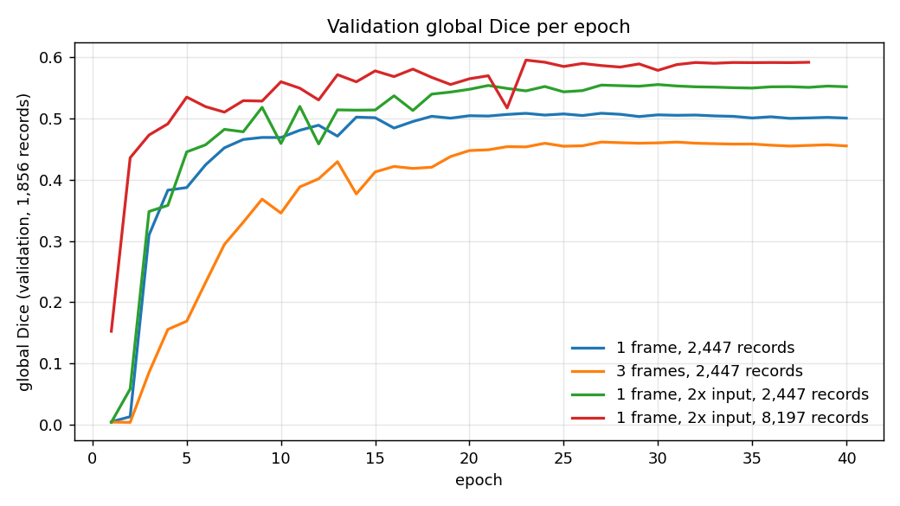
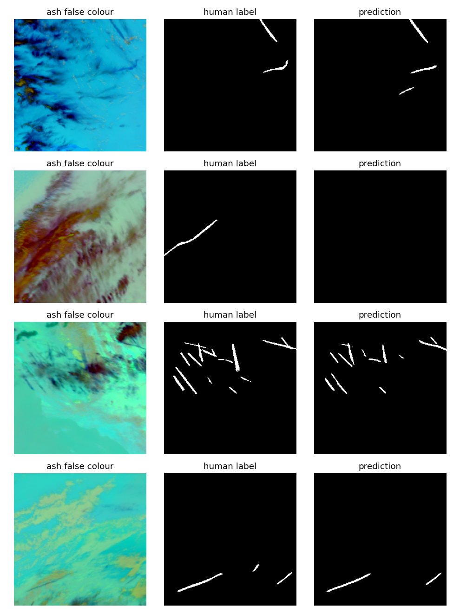

Persistent aircraft contrails cause about 1% of human-caused warming, and many are avoidable with small altitude changes. Checking contrail forecasts needs a detector that marks every contrail pixel in a satellite scene. This is that detector, trained on real GOES-16 infrared data and scored with the Kaggle competition's metric.
Every run uses a U-Net with a ResNet34 encoder, 40 epochs, and is scored on the full validation split with global Dice: intersection and sizes pooled over every pixel of the set, the competition metric.
Model
Train scenes
Global Dice
Labelled frame only
2,447
0.508
+ two neighbouring frames as channels
2,447
0.461
+ input upsampled 2x inside the network
2,447
0.555
+ input upsampled 2x, more data
8,197
0.595

Validation global Dice per epoch. The 2x-input runs lead from the first epochs; stacking frames lags throughout.
Resolution beats everything else tried. Contrails are 1-3 pixels wide at 2 km per pixel. Upsampling before the encoder keeps them alive through its stride-2 layers; logits are pooled back to the label grid.
More data still pays (+0.040 going from 12% to 40% of the training set), and the curve had not flattened.
Stacking frames hurt (-0.047). Frames are 10 minutes apart and contrails drift, so the stacked channels are misaligned.
The best threshold sits far below 0.5 (0.1 for the final model). With under 1% positive pixels the probabilities are poorly calibrated, so the cut-off is tuned on validation.
02What it sees

Ash false colour, human label, prediction. Straight, sharp contrails are caught; the contrail over a complex cloud deck in row 2 is missed entirely, and short fragments in row 3 are dropped.
03Getting 451 GB of data onto a 300 GB disk
The Kaggle archive is 451 GB, and requesting its ~90,000 files one by one triggered the API rate limit, which blocked the account for hours. Two loaders replaced it:
An HTTP Range reader that asks Kaggle once for the archive's signed URL, reads the zip central directory remotely and fetches only bands 11, 14, 15 and the mask.
A streaming reader for OpenContrails, the CC BY 4.0 source dataset on Google Cloud Storage, which parses TFRecords and serialized TensorProto blobs without TensorFlow and skips any training scene that belongs to the validation split.
Both keep each scene as an 8-frame ash false-colour composite in uint8: about 1.2 MB instead of 43 MB.
04Caveats
The validation score picks both checkpoint and threshold, so it could be optimistic; the independent Kaggle private score (0.597, public 0.568) confirms it.
One encoder, one seed: differences around 0.01 are within noise.
No test-time augmentation or ensembling, and 60% of the training data unused.